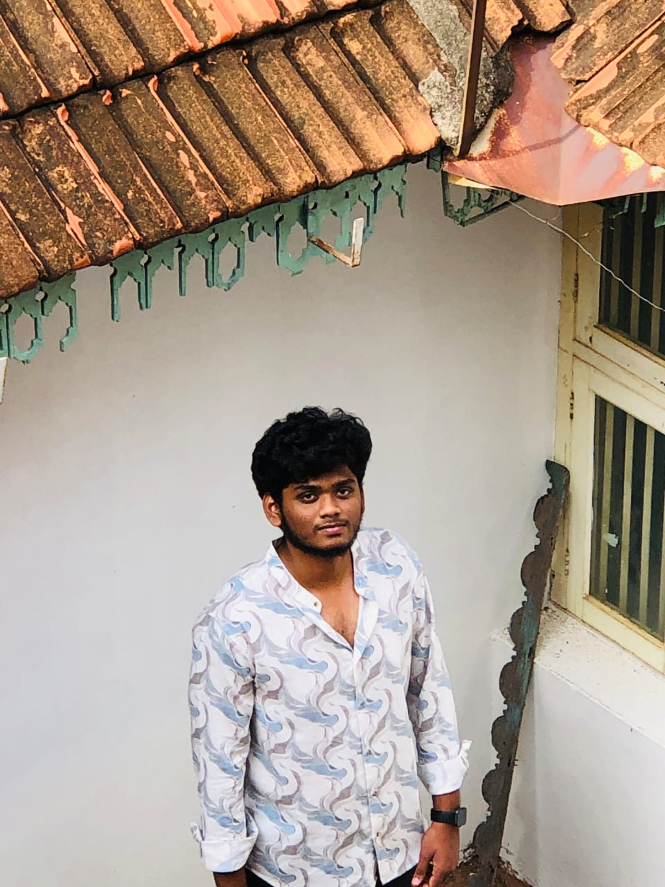

Iklash Ahamed

Summary
i'm Ahamed,i have interest to become a web devloper
Education
- I completed college first year right now
- But i have confidence in my skill level is equal to senior web devlopers
Work Experience
Skills
- Customer service: ⭐️⭐️⭐️⭐️⭐️
- Microsoft office suite: ⭐️⭐️⭐️
- Organizational skills:⭐️⭐️⭐️⭐️
Awards and Certifications
- Employee of the Month - ABC lnc. (August 2016)
Other